原文出处:本文由博客园博主cool2feel提供。
原文连接:https://www.cnblogs.com/cool2feel/p/11394293.html
原文连接:https://www.cnblogs.com/cool2feel/p/11394293.html
摘要 本文将介绍如何通过VS2019创建Xamarin.Forms应用程序，以及如何进行调试。
前言
本文介绍Xamarin.Froms应用程序的创建和调试。
开发环境
1.Visual Studio 2019
2.Xamarin.Forms 3.6.0.344457
创建
1.打开VS2019，选择创建新项目
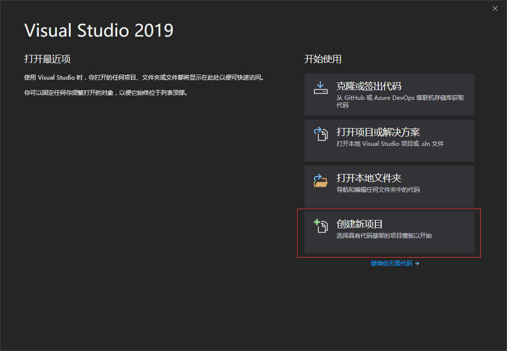
2.搜索框输入Xa，在项目模板中选中移动应用（Xamarin.Forms），点击下一步
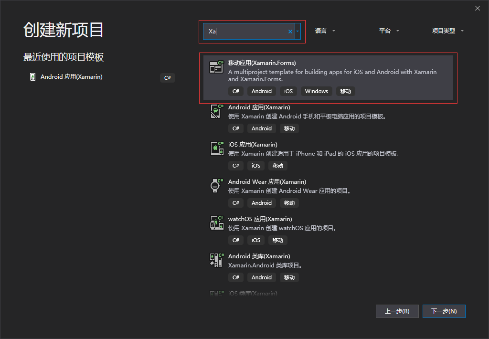
3.配置项目名称、解决方案名称、位置等信息，点击创建
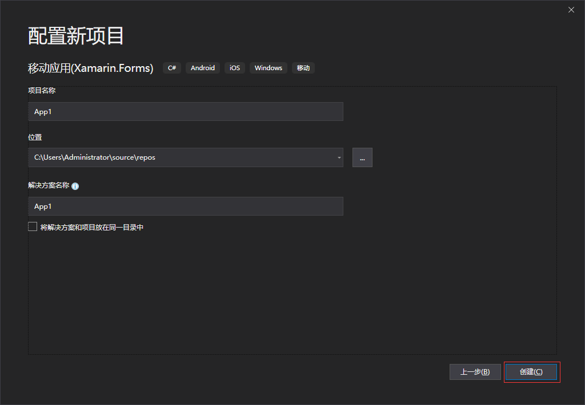
4.项目模板中选中空白，平台勾选Andriod、iOS，点击OK
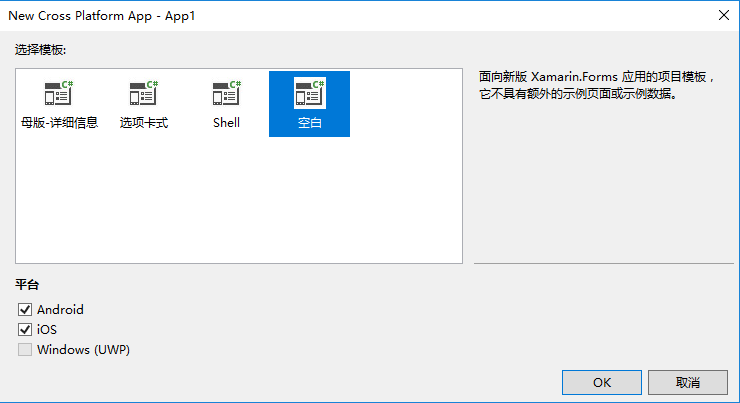
5.创建成功，项目结构如下
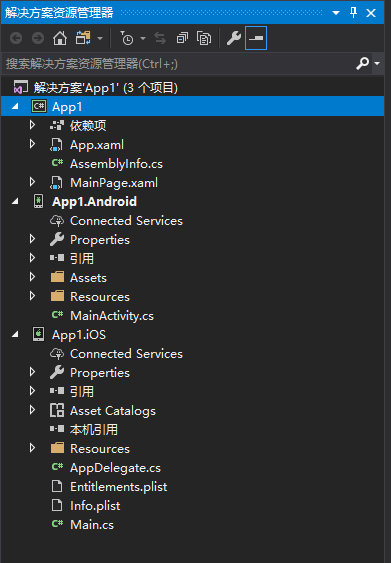
调试
本文只讲安卓项目的调试，iOS项目稍微复杂，后续再研究。
安卓有两种调试方式，一种是安卓仿真器（非常卡，不推荐），一种是真机调试（推荐）。
推荐直接看真机调试
安卓仿真器：
1.选择创建Android Emulator
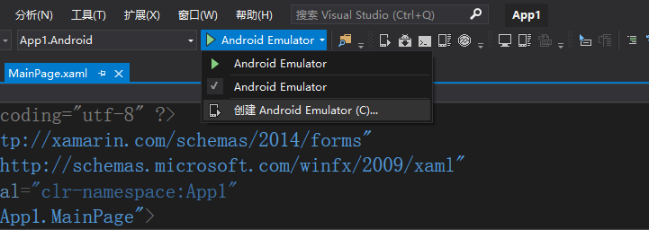
2.配置好信息后点击建立，并同意许可证
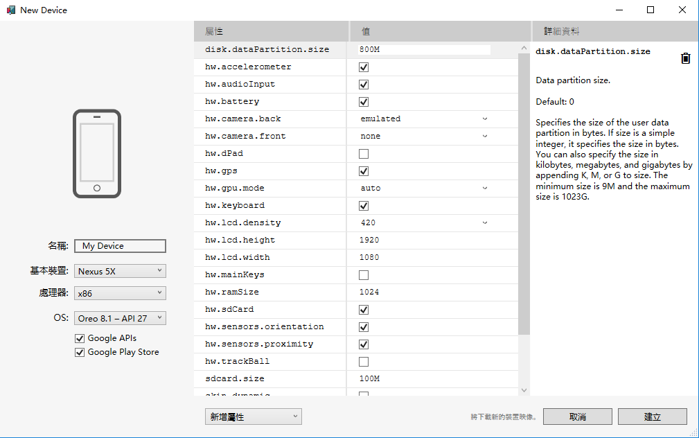
3.创建好后关闭Android Device Manager，重启VS2019并打开项目
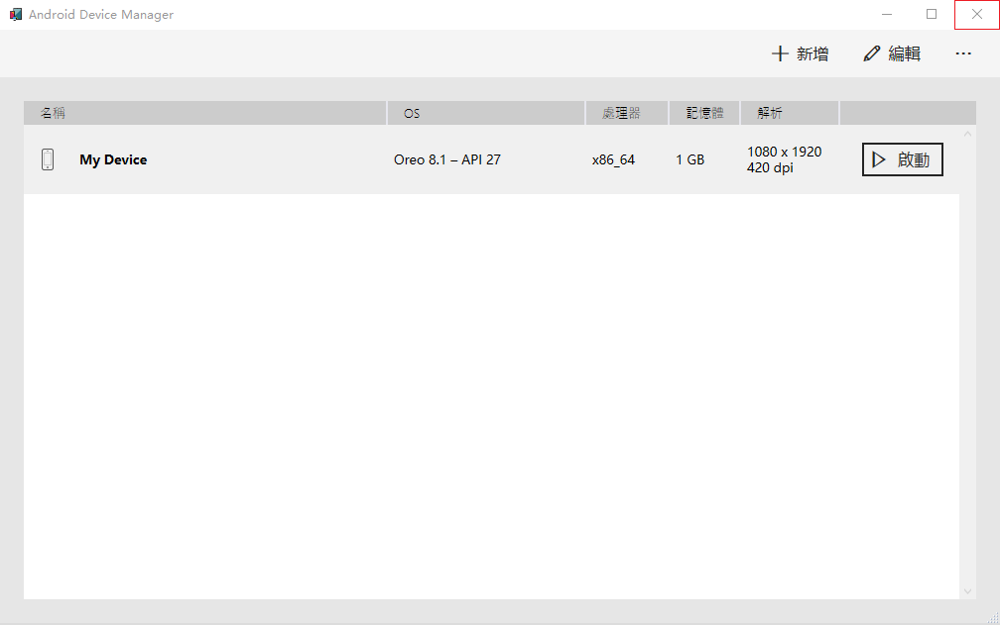
4.重启后便可以使用刚才创建的仿真器进行调试
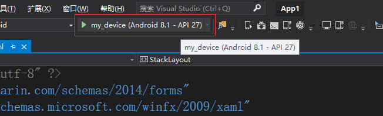
我没有启用硬件加速，非常卡，等了10分钟也没有部署成功，果断放弃 。
真机调试：
1.打开手机的USB调试模式
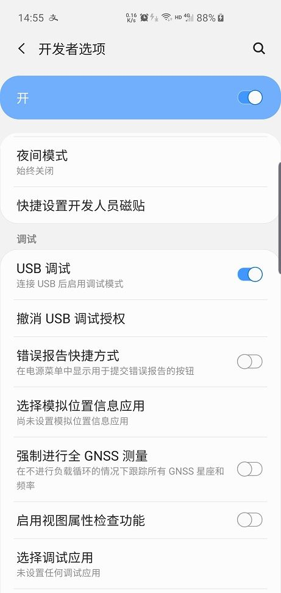
不同手机的打开方式不同，可自行百度相应手机的打开方式。
大概步骤：设置=》关于手机=》连点几次“版本号”（此时打开了开发者选项）=》回到设置=》开发者选项=》打开USB调试
2.将手机通过USB连接到电脑
3.选择连接的手机进行调试（会先将APP部署到手机，再启动APP）
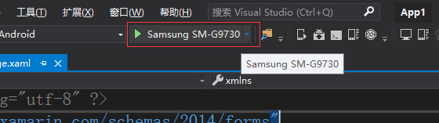
4.启动成功，进行调试

原文链接：http://www.leo96.com/article/detail/39
欢迎添加个人微信号：Like若所思。
欢迎关注我的公众号，不仅为你推荐最新的博文，还有更多惊喜和资源在等着你!一起学习共同进步！